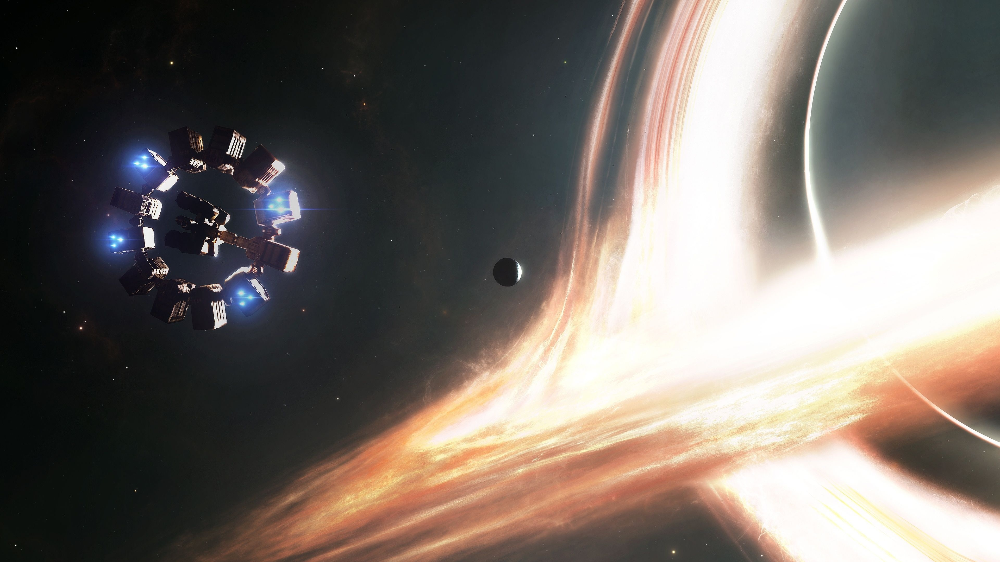

Dr. Miller's Planet
The first of two planets we see the enduarance mission travel to. Due to it's proximity to Gargantua, this oceanic planet has massive tidal waves spanning thousands of feet in height and hundres of miles in length.
Let's take a trip on the Endurance and explore the critically aclaimed 2014 film, Interstellar!
I'm ready, let's get started!Interstellar takes place around April 2067, the world has become famined. They are running out of resources. Coop was a former pilot for NASA and stumbles across their base. He is then recuited to travel trhough the wormhole with the intention to find a new planet for humanity to repopulate on.
Dr. Brand, the leading physicst behind the missions is trying to solved an equation that reconsiles gravity with quantum physics. They know there is a black hole beyond the wormhole and he believes that gather information from the black hole, which are very mysterious, would do part in solving the equation hence saving humanity.
Years prior, NASA sent a group of physicsts and scientists into the wormhold to explore the planets around the black hole. However, NASA never heard from them so part of their mission was recovering there data and the men if possible.
Director Christopher Nolan appointed Nobel prize winner, theoretical astrophysisit Dr. Kip Thorne, who was also an aquaintance of the late Dr. Stephen Hawking to the production team of the film. He worked with the team to create a vizually stunning black hole. The physics behind it was so accurate that each frame took over 100 hours to generate! In 2019, after the first picture of a black hole (M87*) was taken, the predicted black hole from Interstellar seemed to almost perfectly match the real thing!

The first of two planets we see the enduarance mission travel to. Due to it's proximity to Gargantua, this oceanic planet has massive tidal waves spanning thousands of feet in height and hundres of miles in length.
The second of the planets which we see the endurance travel to. This is an icy planet, but the air is ammonia so humans cannot breath it. This planet is named after the scientist who led the initial Lazarus missions.